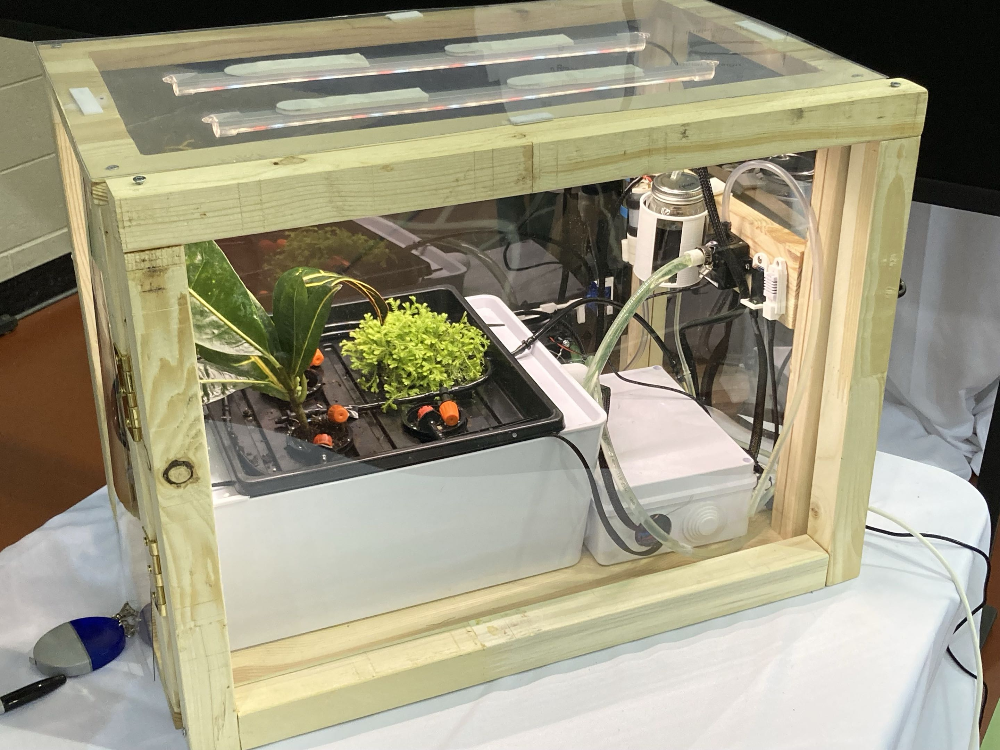
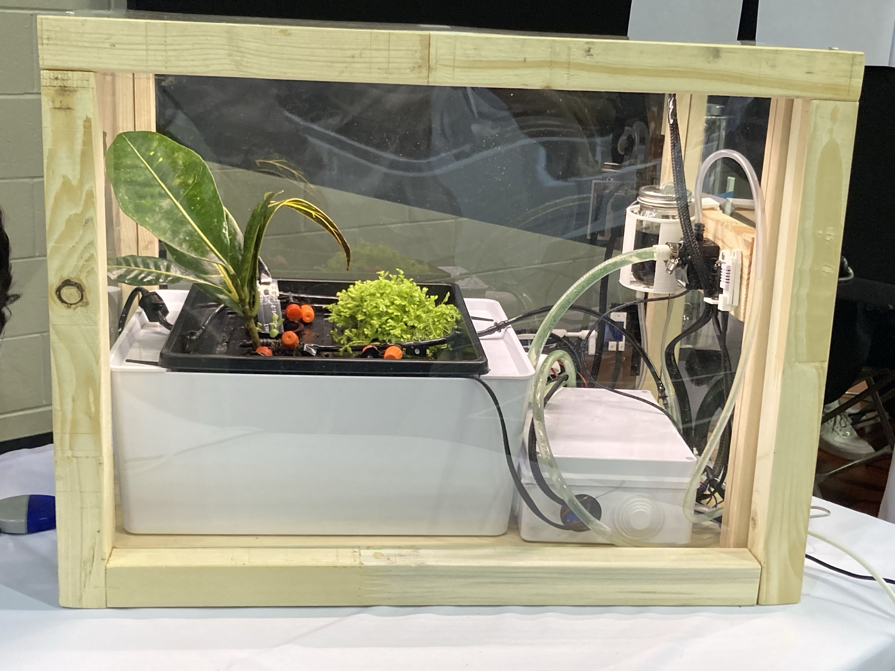

A self-regulating hydroponic greenhouse designed to maintain stable growing conditions across an outdoor ambient temperature range of −20°C to +35°C. Eight months of engineering — from thermal modelling to embedded control systems to physical build.
The goal was to engineer a modular, self-regulating growing environment capable of year-round operation in Northern Canadian climates. The project required integrated analysis across thermal physics, structural mechanics, embedded control systems, and hydroponic growing — each informing the others. The system was designed with scalability in mind: modular units can be combined end-on-end or side-by-side to increase growing capacity and passive solar heat intake proportionally.
Using Iqaluit (63.75°N) as the reference latitude — a conservative mid-point for Northern Canada — daily solar irradiance was modelled across a full year using NASA-derived equations for sun declination and daylight duration.
The daily energy across all polycarbonate faces was computed by integrating irradiance over daylight hours. Front and back faces were estimated at roughly half the top-face irradiance based on angle of incidence geometry, and 1.6× the surface area — contributing a combined factor of 2.6E_D total daily solar intake.
For winter operation, a 60% propylene glycol mixture (freeze point −52.8°C) was modelled using a 1800 L/h pump, establishing the supplemental heat budget.
Convective and radiative losses were evaluated under laminar flow assumptions using Prandtl and Reynolds number analysis referenced against CERN detector cooling data for glycol mixture properties.
Peak: ~137 W/day (July) · Minimum: ~10 W/day (January)
Viable passive heating window (>80W): May 9 – Oct 3 (~5 months)
A closed-loop PID-style temperature control system was implemented across two layers: an ESP32 microcontroller running firmware in C for low-level sensor reading and actuator control, communicating continuously with a Python desktop GUI for monitoring, setpoint adjustment, and data logging. The system maintained ±1°C regulation tolerance under steady-state conditions.
Wireless communication was handled by the ESP32's onboard Wi-Fi stack. All hardware connections — sensors, pump relay, heating element control, and LED grow lights — were hand-soldered to COTS components to minimize cost and maximize integration density within the enclosure.


| Component | Description | Est. Cost |
|---|---|---|
| Raspberry Pi | Main compute unit for GUI and logging | $66.90 |
| ESP32 Dev Board | Embedded microcontroller, sensor I/O, Wi-Fi | ~$15 |
| Polycarbonate Sheet | 0.05″ thick, glazing for all faces | $15–30 |
| Structural Wood | Pine frame construction | $5–20 |
| Submersible Water Pump | Ultra-quiet brushless, hydroponic loop | $15 |
| Water Pipes & Fittings | PVC supply lines, drip emitters | $10–15 |
| Hydroponic Growing Tray | Microgreens/seedling tray with drain | $20–40 |
| UV/Full-Spectrum LED Lights | Supplemental grow lighting | $11 |
| Heat Radiator | Aluminum heat exchanger for glycol loop | ~$15 |
| Ventilation | Vent cover and circulation system | ~$15 |
| Misc. (fasteners, sensors, wiring) | Building materials, temp sensors, relay | ~$10 |
| Total | After 20% BOM reduction from design optimization | ~$194 |
Passive solar heating exceeds 80W from May 9 to October 3 — roughly 5 months — sufficient for unaided warm-season growing without supplemental heat.
The modelled glycol heating loop delivers 147W of thermal output, sufficient to compensate for the ~10W passive solar minimum in deep winter, with significant margin.
Modular end-on-end expansion doubles glazing area and solar intake. Side-by-side expansion increases it by 1.5×. Both configurations are viable for full-year operation with a heat exchanger.
The ESP32-based closed-loop system achieved ±1°C steady-state regulation, validating the control architecture for real deployment conditions.
The external heater did not ship in time for the capstone demonstration. The glycol heating system was validated analytically but not tested under live winter conditions.
Solar model does not account for atmospheric refraction. Front/back face irradiance estimates are geometric approximations. Night-time supplemental heating requirements require further analysis for spring/autumn shoulder seasons.
Future work would focus on live winter thermal testing with the glycol loop installed, detailed insulation R-value measurement to validate the passive heat retention model, and iterating the control firmware to support adaptive setpoints based on external weather data. A scaled-up two-module prototype would directly validate the modularization analysis presented here.